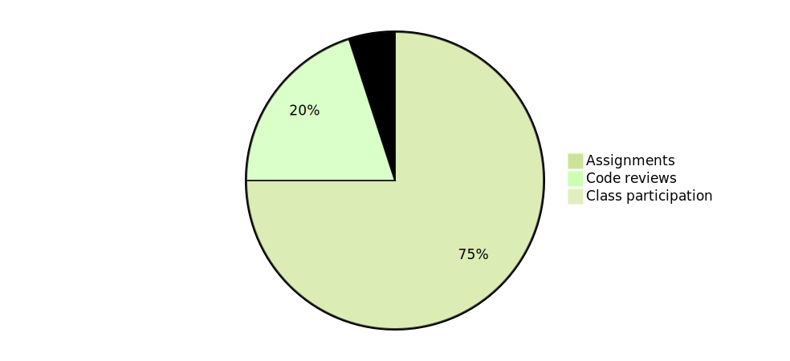

Syllabus
This is the syllabus for CS 164 (Compilers), Fall 2025.
People
Instructor
The instructor is Mike Vanier (mvanier@cms.caltech.edu). Mike's office is Annenberg 110.
Teaching assistants
Here are the teaching assistants for this term:
-
Eric Lee (he/him)
Eric -
Sonica Prakash (she/her)
Sonica
They are both outstanding and we are lucky to have them!
Office hours
Office hours will be posted on the course Piazza page.
Course description
This course covers the construction of compilers: programs which convert program source code to machine code which is directly executable on modern hardware. The course takes an incremental approach: a series of compilers will be built, all of which generate assembly language code for x86-64 processors, with each compiler adding features to the previous one. The final compiler will compile programs written in a full-fledged high-level programming language to assembly language, which can then be compiled to machine language using standard tools.
Topics covered include register allocation, conditionals, loops and dataflow analysis, garbage collection, lexical scoping, and type checking.
This course is project-based and programming-intensive. Students will work in teams of two students each. All compilers will be written in the OCaml programming language.
Learning objectives
At the end of this course, you will have written a compiler from a small subset of a typed dialect of the Scheme programming language to assembly language. Along the way, you will learn the primary ingredients of modern compilers.
Prerequisites
The course has a hard prerequisite of CS 4 (Fundamentals of Computer Programming), because you need to know OCaml in order to take this course.
Two recommended (but not required) prerequisites are:
-
CS 24 (Introduction to Computing Systems), primarily because we will be using assembly language, and CS 24 includes an introduction to assembly language. However, we will describe all the assembly language instructions we need as we get to them.
-
CS 131 (Programming Languages). CS 131 is useful for these reasons:
-
CS 131 also uses OCaml, so students who have taken it have experience writing moderately large multi-file programs in OCaml.
-
Students who have taken CS 131 already know what an abstract syntax tree (AST) is, and what intermediate representations (IRs) are, which will be useful.
Again, we will cover the relevant material in this course.
-
Textbook
The course textbook is Essentials of Compilation by Jeremy Siek. This textbook is available either in a printed version (which we recommend you get) or as a free PDF (which we will distribute). We will be following the book quite closely. The main difference is that the book uses the Racket programming language to build the compilers, whereas we will use OCaml.1
The PDF of the textbook we will use is available on the course Canvas site, under Modules/Textbook.
Topics covered
This is a very abbreviated list of topics covered in the course, presented in the order they will be covered. Some additional material may be covered towards the end of the course.
- Overview of the compilation process
- Variables and scoping
- Register allocation and graph coloring algorithms
- Conditionals and type checking
- Loops and dataflow analysis
- Tuples and garbage collection
- Functions
- Lexically-scoped functions (time permitting)
Grading scheme
The course is on grades. There are no exams. The marks are assigned as follows:
-
75% for 6 programming assignments.
-
20% for participation in weekly code reviews. Students must complete at least 3 code reviews in the term to get full credit.
-
5% for participation in class.

Letter grades are assigned as follows:
| Numerical grade | Letter grade |
|---|---|
| 95-100% | A+ |
| 90-95% | A |
| 85-90% | A- |
| 80-85% | B+ |
| 75-80% | B |
| 70-75% | B- |
| 68-70% | C+ |
| 65-68% | C |
| 60-65% | C- |
| 55-60% | D |
| < 55% | F |
Assignment grades
Each assignment will be graded as follows:
- 75% on correctness (up to 10% off per pass up to the limit)
- 25% on coding style
- formatting (5%)
- design (clean, not confusing, good use of functional style, etc.)
Assignment grades will be given in a file called GRADES
written/edited by the grader.
See below for more details on this.
Lectures
Lectures will be held MWF from 11 AM to noon in Annenberg room 104.
Most weeks will only have MW lectures, with the F lecture slot being used for code reviews.
Lecture slides will be posted after class, but lectures will not be recorded.
Assignments
Due dates
Assignments will be due on Fridays at 6 PM.
Teams
Assignments are done in teams of two students each. Teams will stay together for the duration of the term (unless one student drops the course or unless there is some serious problem). Teams are expected to split the workload of each assignment evenly, and there may be penalties if it is obvious that one student in the team is doing most or all of the work.
Students will create a private Github repository for their code. They will add the course instructor and their TA grader as full contributors to their repository. (This is for testing purposes.)
Submitting assignments and receiving grades
Since the instructor and graders will have access to the code repositories of the teams, they can check out the latest version of the code and run the tests at any time. Thus, assignments do not need to be "submitted" as such; instead, "submitting" an assignment means that the team lets the instructor know when an assignment is ready to be graded (ideally, before the due date/time).
The grader will grade the assignment and leave comments in a file at the root of the directory called GRADES. They may also leave comments in the code regarding code that students need to fix/change. Such comments will have this form:
We ask that you do not use this style for your own comments. Once the items have been fixed, such comments should be removed before "resubmitting" the assignment.
If students do not understand a comment, they are encouraged to contact the instructor and the TAs for clarification.
Assignments will be graded out of 100. The grade for an assignment will be 75% for code correctness (i.e. passing the tests) and 25% for code quality. Code quality is broken down into:
- 5% for code formatting
- 20% for everything else
Code quality is necessarily somewhat subjective, but we would like to see readable, well-documented, and well-designed code. In particular, code that is convoluted or unreasonably hard-to-understand or "tricky" may lose points.
Note
If you need to write complicated code, please write comments so that TAs can understand why you wrote it!
Different modules will vary in how much leeway you have to implement the code. In some modules, we want you to write specific functions with very specific goals; in others, we only care about the interface functions (exported functions), and how you write them is up to you (subject to the criteria just described). You are always allowed to write extra helper functions wherever you feel the need.
Also note that code quality will be a major focus of code reviews, so it will be possible to correct these issues before reworks are due.
Code reviews
At least once every two weeks (and optionally more often), teams will meet with the instructor or one of the TAs online for roughly a half hour code review session. These sessions (which will normally happen on Thursday or Friday) are open-ended; they can be used for anything the instructor/TA or the students want. We expect that students will discuss problems they are having with their assignments, points of confusion, or just ask the instructor/TA if a particular piece of code is written the right way. Conversely, the instructor/TA may ask students why they chose to write a particular piece of code a particular way, and may suggest alternatives.
To get full marks for code reviews, a group must participate in at least three (3) code review sessions. (You may always sign up for more than three sessions if you find them worthwhile.)
Redos
Once grades have been submitted, teams have one week from that time to rework the assignment for up to full credit.
Normally redos will not be accepted after that period unless there are extenuating factors (e.g. health emergencies). Nevertheless, we do encourage students to rework old assignments if necessary, since newer assignments are extensions of older assignments.
Late policies
Because the instructor/TAs have access to your code repositories, and thus can run the tests on those repositories at any time, in principle there is no need for a late policy (any assignment can be graded simply by running the tests at any time). However, a team can request that an assignment be graded later than the usual time.
Late days
Each student gets 10 "late days" for the entire term. Each late day allows you to submit an assignment one day late. You are allowed to use more than one late day on an assignment if you need to (but no more than 3 late days per assignment).
In order to use late days, you must specify on the assignment when you submit it:
- how many late days you have used for the assignment,
- how many late days you have used up for the entire term.
Please write this information in your README.md file,
which you will submit as part of your assignment.
Once you have used up all of your late days, you can't use any more.
If you don't specify any late days in your assignment submission, we will assume that you are not using any for the assignment.
You are never required to use late days, even if you submit an assignment late, but if you do submit an assignment late and don't use late days, you will receive late penalties.
Restrictions on late days
There are these restrictions on the use of late days:
-
To keep you from using up all of your late days on a single assignment, you cannot use more than 3 late days on any single assignment.
-
You cannot use late days on redos. As specified above, a redo which is late is not graded.
Extensions
Normally, if you need an extension, just use your late days.
Students may request additional extensions for assignments
due to unusual circumstances (e.g. health problems).
These extensions have to be approved by the course instructor (Mike).
If you get an extension, you must indicate that
at the top of your README.md file you submit
e.g. something like this:
This is so your grader knows not to take off late points.
Late penalties
A late penalty is 10% of the final (unpenalized) grade per day late. It cannot be redeemed through rework.
External websites
There is a course Piazza page, and students will be added to it by the instructor.
Code reviews will be done on Zoom.
If there is sufficient demand, a Discord server can be set up.
Course software
Setting up the course software is described in assignment 0.
Academic integrity
Caltech’s Honor Code states that: "No member of the Caltech community shall take unfair advantage of any other member of the Caltech community."
Understanding and avoiding plagiarism: Plagiarism is the appropriation of another person's ideas, processes, results, or words without giving appropriate credit, and it violates the honor code in a fundamental way. You can find more information at this link.
Collaboration policies
Collaboration policies are given in the Collaboration policies document.
Diversity and inclusion
You all belong in this class and as such should expect to be treated with respect by your classmates and by the course staff. It is our goal, as the course staff, to provide an interesting and challenging environment that is conducive to learning. If any incident occurs that challenges this commitment to a supportive and inclusive environment, please let the instructor know so the issue can be addressed.
Accessibility
We consider accessibility to be an extremely important issue. If some aspect of the course is making it more difficult for you to learn the material, we want to hear about it! We want this course to be an enjoyable experience for you, not a burden.
Student wellness
It is very important that you take care of your mental wellness throughout the course. Everyone on the course staff is available to chat, and you can always attend office hours for a non-academic conversation if necessary.
Students with documented disabilities
Students who may need an academic accommodation based on the impact of a disability must initiate the request with Caltech Accessibility Services for Students (CASS). Professional staff will evaluate the request with required documentation, recommend reasonable accommodations, and prepare an Accommodation Letter for faculty dated in the current quarter in which the request is being made. Students should contact CASS as soon as possible, since timely notice is needed to coordinate accommodations. See http://cass.caltech.edu/ for more information.
-
There is also a Python version of the compiler textbook, which is slightly different and which we won't be using. ↩